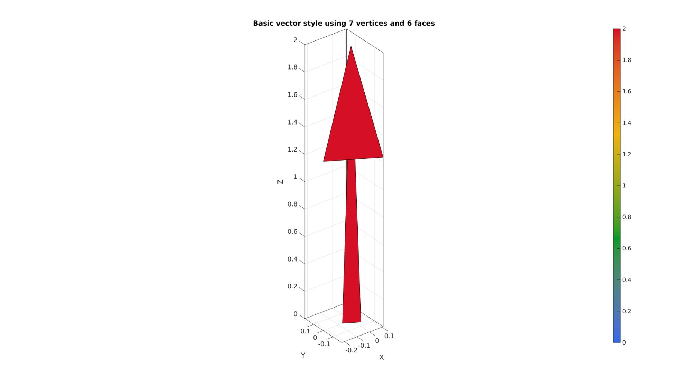
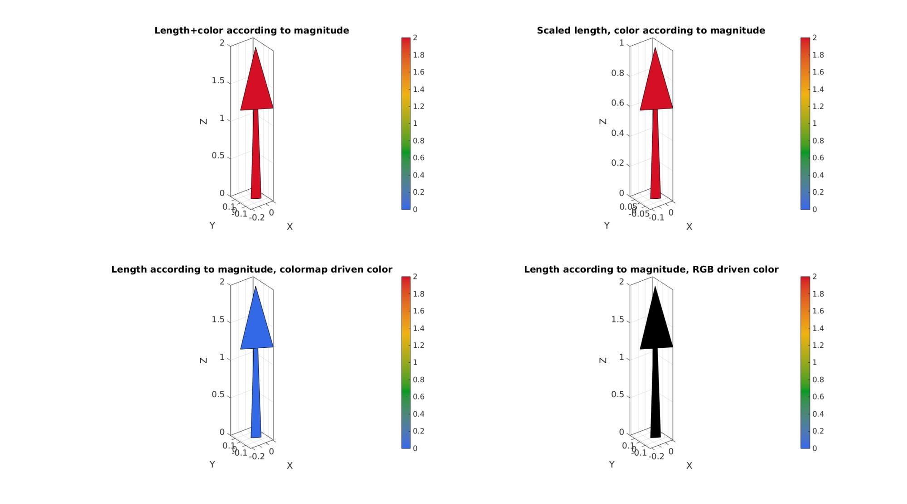
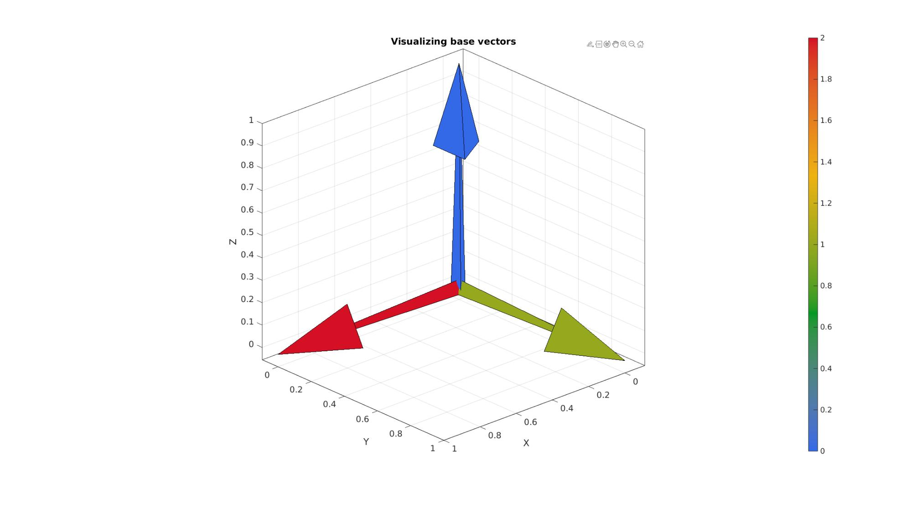
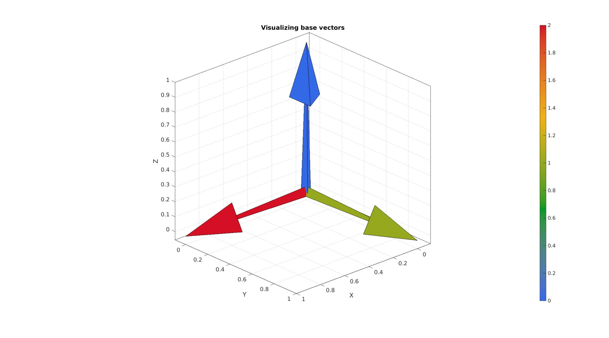

quiver3Dpatch
Below is a demonstration of the features of the quiver3Dpatch function
Contents
- Plotting a vector
- Defining vector lengths and colours
- Example visualising coordinate system base vectors
- Example for multidimensional image data 1: colormap driven vectors combined with RGB driven iso-surfaces
- Example for multidimensional image data 2: RGB driven vectors combined with colormap driven iso-surfaces
clear; close all; clc;
Plot settings
cMap=jet(250); faceAlpha1=1; faceAlpha2=1; edgeColor1='none'; edgeColor2='none'; cMap1=gjet(250); cMap2=gray(250); fontSize=15;
Plotting a vector
Below is a visualisation of the basec vector style
%Defining a single vector colinear with the Z-axis with length 2 X=0; Y=0; Z=0; %Vector origin (position vector components) u=0; v=0; w=2; %Vector components G=sqrt(u.^2+v.^2+w.^2); %Vector magnitude cLim=[0 max(G(:))]; Cv=[]; %If empty then vector magnitude based scaling is used a=[min(G(:)) max(G(:))]; %Arrow length scaling to magnitude range [F1,V1,C1]=quiver3Dpatch(X,Y,Z,u,v,w,Cv,a); cFigure; title('Basic vector style using 7 vertices and 6 faces'); gpatch(F1,V1,C1); colormap(cMap1); colorbar; clim(cLim); axisGeom(gca,fontSize); drawnow;
Defining vector lengths and colours
a=[min(G(:)) max(G(:))]; %Arrow length scaling to magnitude range [F1,V1,C1]=quiver3Dpatch(X,Y,Z,u,v,w,Cv,a); a=[1 1]; %Arrow length scaling min=1, max=1 [F2,V2,C2]=quiver3Dpatch(X,Y,Z,u,v,w,Cv,a); a=[min(G(:)) max(G(:))]; %Arrow length scaling to magnitude range Cv=zeros(size(X)); [F3,V3,C3]=quiver3Dpatch(X,Y,Z,u,v,w,Cv,a); C4=cmaperise(C3,cMap2,cLim); cFigure; subplot(2,2,1); title('Length+color according to magnitude'); gpatch(F1,V1,C1); colormap(gca,cMap1); colorbar; clim(cLim); axisGeom(gca,fontSize); subplot(2,2,2); title('Scaled length, color according to magnitude'); gpatch(F2,V2,C2); colormap(gca,cMap1); colorbar; clim(cLim); axisGeom(gca,fontSize); subplot(2,2,3); title('Length according to magnitude, colormap driven color'); gpatch(F3,V3,C3); colormap(gca,cMap1); colorbar; clim(cLim); axisGeom(gca,fontSize); subplot(2,2,4); title('Length according to magnitude, RGB driven color'); gpatch(F3,V3,C4); colormap(gca,cMap1); colorbar; clim(cLim); axisGeom(gca,fontSize); drawnow;
Example visualising coordinate system base vectors
originBasis1=[0 0 0]; E1=eye(3,3); C1=[2 1 0]; originBasis2=[0 0 0]; E2=[2/3 -1/3 2/3; 2/3 2/3 -1/3; -1/3 2/3 2/3]; C2=[5 4 3]; [Fc1,Vc1,Cc1]=quiver3Dpatch(originBasis1(1)*ones(1,3), originBasis1(2)*ones(1,3), originBasis1(3)*ones(1,3),E1(:,1),E1(:,2),E1(:,3),C1',[1 1]); [Fc2,Vc2,Cc2]=quiver3Dpatch(originBasis2(1)*ones(1,3), originBasis2(2)*ones(1,3), originBasis2(3)*ones(1,3),E2(:,1),E2(:,2),E2(:,3),C2',[1 1]); cFigure; title('Visualizing base vectors','FontSize',fontSize); gpatch(Fc1,Vc1,Cc1,'k',1); gpatch(Fc1,Vc1,Cc1,'k',0.5); colormap(cMap1); colorbar; clim(cLim); axisGeom(gca,fontSize); view([137.5,24]); drawnow;
Example for multidimensional image data 1: colormap driven vectors combined with RGB driven iso-surfaces
Simulating 3D volume and vector data
n=27; [X,Y,Z]=meshgrid(linspace(-4.77,4.77,n)); phi=(1+sqrt(5))/2; M=2 - (cos(X + phi*Y) + cos(X - phi*Y) + cos(Y + phi*Z) + cos(Y - phi*Z) + cos(Z - phi*X) + cos(Z + phi*X));
Simulating vector data
%Vector data here based on the gradient of the image [u,v,w] = gradient(M); G=hypot(hypot(u,v),w); %Vector lenghts %Iso-surface patch data to illustrate joint plotting c_iso1=0; c_iso2=5; [Fi1,Vi1,Ci1] = isosurface(X,Y,Z,M,c_iso1,M); [Fi2,Vi2,Ci2] = isosurface(X,Y,Z,M,c_iso2,M); a=[min(G(:)) max(G(:))]; %Arrow length scaling L=G>0.9; %Logic indices for arrows [Fv,Vv,Cv]=quiver3Dpatch(X(L),Y(L),Z(L),u(L),v(L),w(L),G(L),a); cLim=[min(M(:)) max(M(:))]; %Colorbar limits [Ci1n]=cmaperise(Ci1,cMap2,cLim); [Ci2n]=cmaperise(Ci2,cMap2,cLim); cFigure; hold on; title('Colormap driven vector colors and RGB driven isosurfaces','FontSize',fontSize); gpatch(Fv,Vv,Cv,edgeColor1,1); gpatch(Fi1,Vi1,Ci1n,edgeColor2,faceAlpha2); gpatch(Fi2,Vi2,Ci2n,edgeColor2,faceAlpha2); colormap(cMap1); colorbar; clim([min(Cv(:)) max(Cv(:))]); axisGeom(gca,fontSize); camlight headlight; drawnow;

Example for multidimensional image data 2: RGB driven vectors combined with colormap driven iso-surfaces
Angle driven color can also be specified e.g. RGB values indicating vector angle
%Specifying angle dependant RGB type color Xc=repmat(u(L),[6,1]); Yc=repmat(v(L),[6,1]); Zc=repmat(w(L),[6,1]); Crgb=[Xc(:) Yc(:) Zc(:)]; M=sqrt(Crgb(:,1).^2+Crgb(:,2).^2+Crgb(:,3).^2); Crgb=abs(Crgb./(M*ones(1,3))); %Normalising color
Defining a sphere to show the color mapping
[F,V,~]=geoSphere(4,1);
Xs=V(:,1); Ys=V(:,2); Zs=V(:,3);
C=[mean(Xs(F),2) mean(Ys(F),2) mean(Zs(F),2)]; %color for angles
The figure now demonstrates isosurfaces for the image data with overlain the gradient vectors coloured according to their direction
cFigure; subplot(1,2,1); xlabel('X','FontSize',fontSize);ylabel('Y','FontSize',fontSize);zlabel('Z','FontSize',fontSize); title('RGB driven vector colors and colormap driven isosurfaces','FontSize',fontSize); Cv=vecnormalize(Vv); gpatch(Fv,Vv,Crgb,edgeColor1,1); gpatch(Fi1,Vi1,Ci1,edgeColor2,faceAlpha2); gpatch(Fi2,Vi2,Ci2,edgeColor2,faceAlpha2); patch('Faces',Fv,'Vertices',Vv,'EdgeColor','none', 'FaceVertexCData',Crgb,'FaceColor','flat','FaceAlpha',1); patch('Faces',Fi1,'Vertices',Vi1,'FaceColor','flat','CData',Ci1,'EdgeColor',edgeColor2,'FaceAlpha',faceAlpha2); hold on; patch('Faces',Fi2,'Vertices',Vi2,'FaceColor','flat','CData',Ci2,'EdgeColor',edgeColor2,'FaceAlpha',faceAlpha2); hold on; colormap(cMap2); colorbar; clim([min(Cv(:)) max(Cv(:))]); axisGeom(gca,fontSize); camlight headlight; subplot(1,2,2); hp=gpatch(F,V,abs(C),'none',1); DCM=eye(3,3); origin=[0 0 0]; [Fa,Va,Ca]=quiver3Dpatch(origin(1)*ones(1,3), origin(2)*ones(1,3), origin(3)*ones(1,3),-DCM(:,1),-DCM(:,2),DCM(:,3),[],[3,3]); hp2=gpatch(Fa,Va,repmat(eye(3,3),6,1),'none',1); hold on; axisGeom(gca,fontSize); view(-45,30); drawnow;


GIBBON www.gibboncode.org
Kevin Mattheus Moerman, gibbon.toolbox@gmail.com
GIBBON footer text
License: https://github.com/gibbonCode/GIBBON/blob/master/LICENSE
GIBBON: The Geometry and Image-based Bioengineering add-On. A toolbox for image segmentation, image-based modeling, meshing, and finite element analysis.
Copyright (C) 2006-2023 Kevin Mattheus Moerman and the GIBBON contributors
This program is free software: you can redistribute it and/or modify it under the terms of the GNU General Public License as published by the Free Software Foundation, either version 3 of the License, or (at your option) any later version.
This program is distributed in the hope that it will be useful, but WITHOUT ANY WARRANTY; without even the implied warranty of MERCHANTABILITY or FITNESS FOR A PARTICULAR PURPOSE. See the GNU General Public License for more details.
You should have received a copy of the GNU General Public License along with this program. If not, see http://www.gnu.org/licenses/.